La Maserati Tipo 420/M/58 Eldorado: Un Capolavoro dell'Ingegneria Automobilistica.
La Maserati Tipo 420/M/58 Eldorado è una vettura che ha segnato un capitolo indimenticabile nella storia delle corse automobilistiche degli anni '50, rappresentando l'apice dell'ingegneria sportiva italiana. Creata per affrontare le competizioni più prestigiose e impegnative dell'epoca, questa macchina ha saputo coniugare prestazioni straordinarie, un design innovativo e una robustezza che l'ha resa protagonista sulle piste più difficili del mondo. Con il suo motore a 6 cilindri in linea da 4,2 litri, capace di sviluppare oltre 250 cavalli, la Tipo 420/M/58 Eldorado raggiungeva velocità superiori ai 250 km/h, un risultato straordinario per l'epoca. La vettura fu progettata per rispondere alle esigenze dei piloti più esperti e ambiziosi, che avevano bisogno di un'auto non solo potente, ma anche agile e durevole per affrontare le difficili gare di resistenza. La Tipo 420/M/58 Eldorado era dotata di un motore estremamente raffinato e potente, che rappresentava una delle migliori espressioni dell'arte meccanica dell'epoca. Le sue capacità motoristiche le consentivano di affrontare con agilità le gare più impegnative come la Mille Miglia, una delle competizioni automobilistiche più celebri, dove l'auto si distinse per velocità e affidabilità. La distribuzione del peso perfettamente equilibrata e un telaio in acciaio rinforzato assicuravano solidità e resistenza, mentre la carrozzeria in alluminio riduceva il peso complessivo, migliorando la manovrabilità e l'efficienza. L'innovativo design aerodinamico, con il cofano allungato e le linee fluide, minimizzava la resistenza dell'aria, ottimizzando ulteriormente le performance alle alte velocità.
 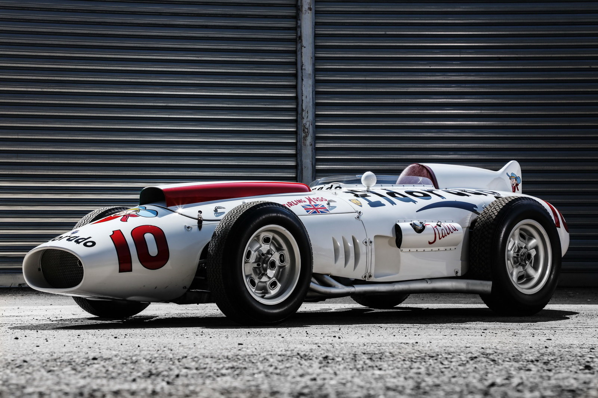
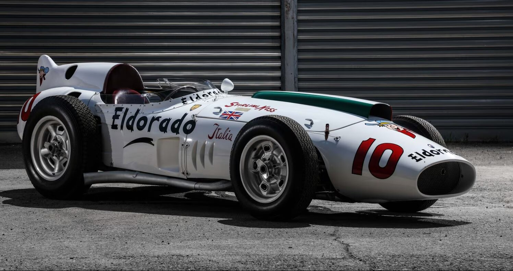
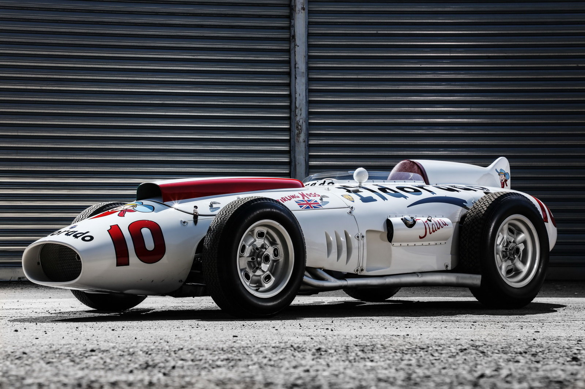
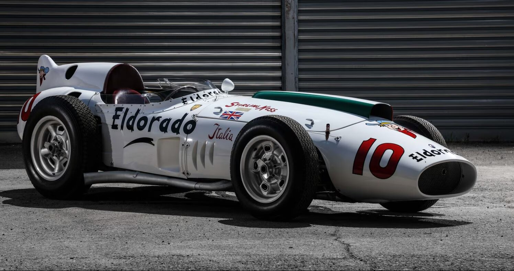
Inoltre, la vettura vantava un sistema di sospensioni avanzato che le consentiva di affrontare anche le superfici più difficili con un'aderenza eccellente, garantendo una guida precisa e stabile anche durante le curve più strette e le frenate più intense. Questo sistema contribuiva enormemente alla sicurezza del pilota, un aspetto fondamentale nelle gare di durata dove l'affidabilità e la reattività sono cruciali. Il cambio manuale a 5 marce, inoltre, permetteva al pilota di sfruttare al massimo la potenza del motore, mentre la sospensione anteriore indipendente e il retrotreno rigido garantivano una stabilità ottimale anche alle velocità più elevate, aumentando la capacità della vettura di mantenere il controllo durante manovre ad alta velocità. La Tipo 420/M/58 Eldorado era progettata anche per affrontare lunghe distanze senza compromettere le sue prestazioni, grazie a un serbatoio carburante di grande capacità che garantiva autonomia anche nelle gare di resistenza. Il sistema di freni a tamburo, che era una delle migliori tecnologie per l'epoca, completava il pacchetto, permettendo alla vettura di affrontare senza difficoltà le frenate più estreme, garantendo sempre il massimo della sicurezza. Ogni componente della vettura, dalla struttura al motore, era stato progettato per garantire una lunga durata anche nelle condizioni più difficili. La cura nei dettagli, la scelta dei materiali e l'innovazione tecnologica facevano della Tipo 420/M/58 Eldorado una delle macchine più affidabili della sua epoca, capace di competere a livelli altissimi in qualsiasi tipo di competizione. La sua agilità e la sua stabilità, uniti a un motore estremamente potente, la rendevano una delle preferite tra i piloti più esperti.
 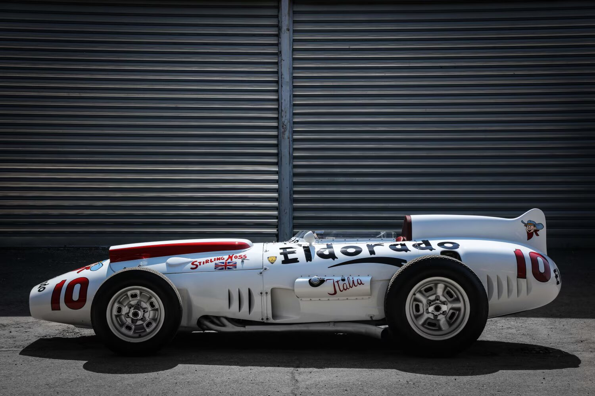
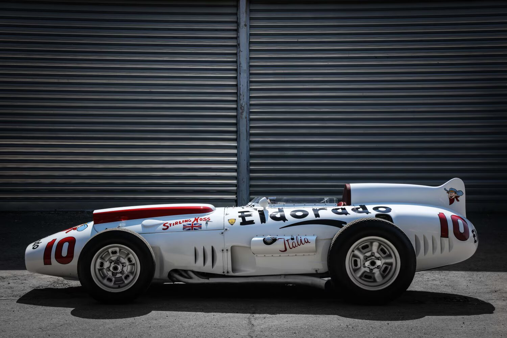

Ford GT 1940: Pioniere dell'Ingegneria Automobilistica.
La Ford GT del 1940 è un'auto che ha lasciato un segno indelebile nella storia dell'automobilismo, segnando un primo passo fondamentale nel percorso della Ford verso l'eccellenza nelle competizioni. Sebbene non sia una delle vetture più conosciute del suo tempo, si distingue per la sua ingegneria all'avanguardia, il design innovativo e le prestazioni avanzate per l'epoca. Progettata in un periodo di grande cambiamento nell'automobilismo, la Ford GT del 1940 incarnava la visione futuristica della casa automobilistica, con l'obiettivo di creare una macchina potente, veloce e soprattutto affidabile, in grado di affrontare le sfide delle gare più impegnative. Il motore V8 da 4,0 litri della Ford GT, con una potenza di circa 95 cavalli, rappresentava una meraviglia tecnologica per l'epoca. Nonostante la potenza fosse inferiore rispetto ai modelli odierni, questo motore a otto cilindri disposti a V offriva una grande capacità di accelerazione e una velocità massima di circa 160 km/h, un risultato impressionante per il periodo. Il V8 garantiva anche un ottimo equilibrio tra prestazioni e durata, caratteristiche essenziali nelle corse di lunga distanza, dove non solo la velocità, ma anche la resistenza, erano fondamentali.
 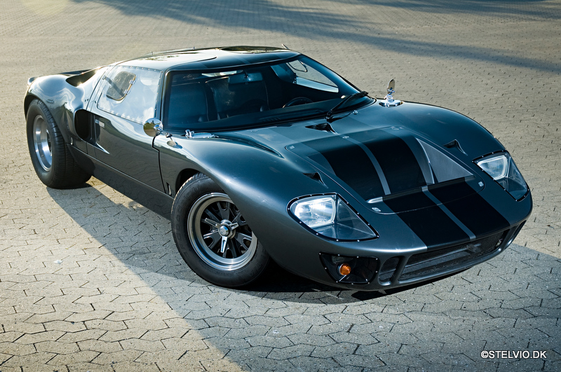
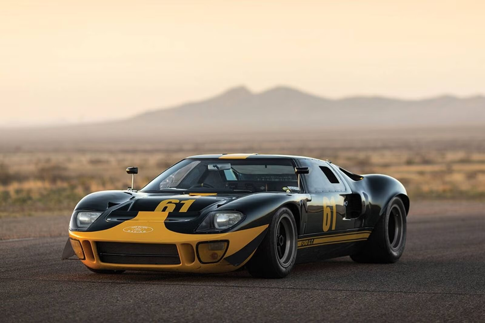
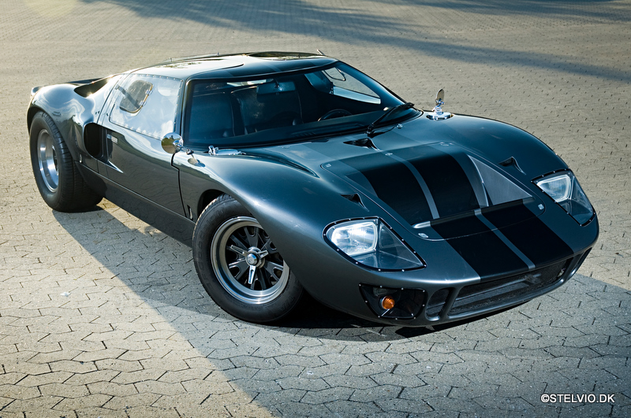
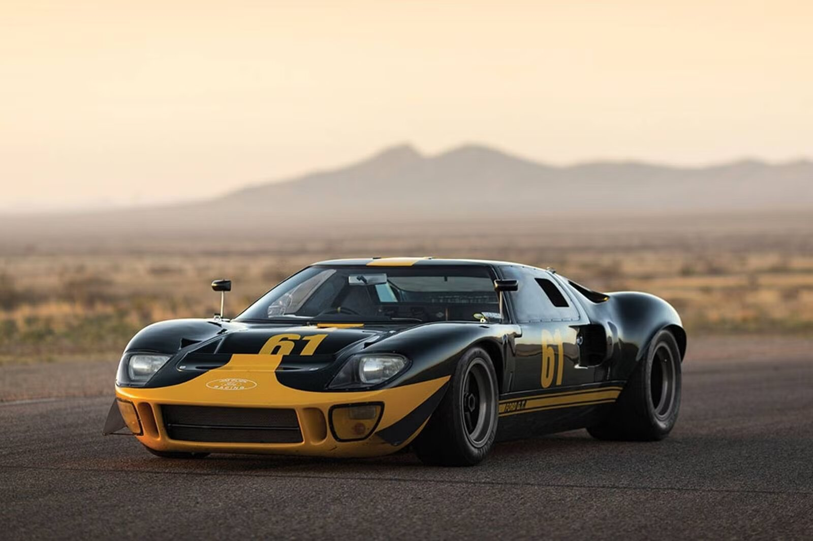
La carrozzeria della Ford GT del 1940 era costruita con materiali leggeri ma resistenti, il che migliorava la manovrabilità e le prestazioni aerodinamiche. Sebbene il design fosse semplice rispetto agli standard moderni, le linee fluide riducevano la resistenza dell'aria, ottimizzando le prestazioni alle alte velocità. Inoltre, il telaio solido e ben progettato consentiva alla vettura di affrontare le sfide delle corse con agilità, mentre la distribuzione bilanciata del peso garantiva stabilità anche nelle condizioni più difficili. La vera forza della Ford GT del 1940 risiedeva nella sua affidabilità. Non era solo un'auto veloce, ma anche progettata per resistere nel tempo. Il motore, insieme al sistema di sospensioni, permetteva alla vettura di sostenere le sollecitazioni delle gare di endurance, dove la capacità di durare senza cedimenti era cruciale quanto la velocità. Questo la rendeva particolarmente adatta per le competizioni di lunga durata, dove il fattore di resistenza era spesso decisivo. Pur non avendo la fama delle versioni successive come la leggendaria Ford GT40, la Ford GT del 1940 ha svolto un ruolo cruciale nello sviluppo della Ford come protagonista delle corse automobilistiche. Ha posto le basi per l'evoluzione del marchio e ha influenzato la progettazione dei modelli che avrebbero segnato la storia delle competizioni, mostrando la visione innovativa della Ford nel creare veicoli destinati a dominare i circuiti più difficili del mondo.

Ferrari 250 GTO: La Leggenda delle Corse e del Design Senza Tempo.
La Ferrari 250 GTO è una delle vetture più iconiche e affascinanti della storia dell’automobilismo, simbolo indiscusso della raffinatezza ingegneristica e della bellezza senza tempo che solo Ferrari è in grado di offrire. Prodotta tra il 1962 e il 1964, la 250 GTO rappresenta l’apice della tecnica automobilistica dell’epoca, combinando prestazioni straordinarie con un design che ancora oggi affascina collezionisti e appassionati di motori. La 250 GTO fu creata per partecipare al Campionato Mondiale Marche, una delle competizioni più prestigiose e impegnative dell’automobilismo internazionale, e si distinse per la sua agilità, velocità e robustezza, ottenendo numerosi successi in pista. Il cuore pulsante della Ferrari 250 GTO è il suo motore V12 da 3,0 litri, sviluppato in collaborazione con il leggendario ingegnere Giotto Bizzarrini. Il motore era capace di erogare circa 280 cavalli, una potenza che permetteva alla vettura di raggiungere velocità superiori ai 280 km/h, un risultato straordinario per l'epoca. La 250 GTO vantava una notevole accelerazione, con una capacità di raggiungere i 100 km/h in meno di 6 secondi, un dato che la rendeva una delle auto da corsa più veloci e reattive degli anni '60. La sua configurazione a 12 cilindri in linea garantiva una potenza continua e una risposta del motore fluida, fondamentale per affrontare le lunghe e difficili gare di durata.
 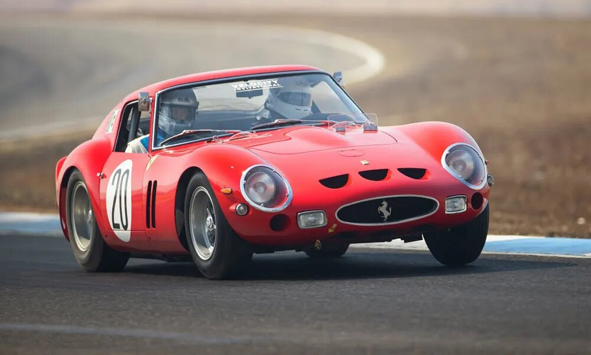
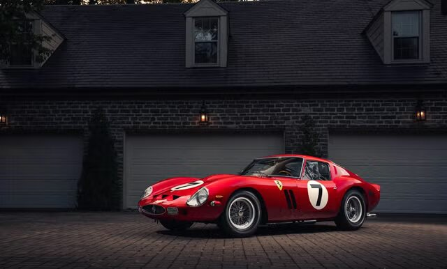
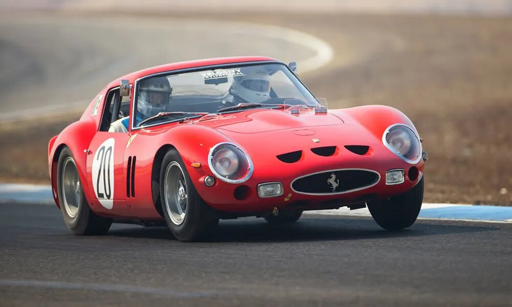
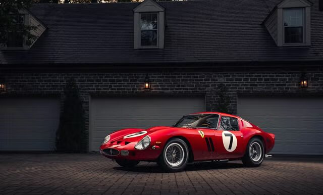
Il design della Ferrari 250 GTO è un capolavoro che ha segnato un'epoca, con linee fluide ed eleganti che univano funzionalità ed estetica in un equilibrio perfetto. La carrozzeria, costruita in lega leggera, era progettata per ridurre al minimo il peso e migliorare l'aerodinamica, con il suo profilo slanciato che le permetteva di tagliare l'aria con estrema efficacia. Ogni dettaglio, dalla forma del cofano al posizionamento dei fari, è stato studiato per ottimizzare le performance in pista, rendendo la 250 GTO non solo un’auto da corsa, ma anche un’icona di design automobilistico. Il telaio della Ferrari 250 GTO, costruito in acciaio tubolare, garantiva solidità e resistenza, ma anche una grande agilità nelle curve e nelle manovre ad alta velocità. Il bilanciamento tra la parte anteriore e quella posteriore era ottimale, consentendo alla vettura di mantenere una stabilità eccellente anche nei tratti più impegnativi delle competizioni. Il sistema di sospensioni indipendenti, anteriore e posteriore, contribuiva ulteriormente alla manovrabilità, permettendo una guida precisa anche alle velocità più elevate. Una delle caratteristiche che rendeva la Ferrari 250 GTO una vettura unica era la sua affidabilità nelle lunghe gare di endurance. La vettura era progettata per affrontare lunghe distanze senza compromettere le sue prestazioni, con un sistema di raffreddamento altamente efficiente e un serbatoio carburante di grande capacità che garantiva una buona autonomia. Anche il sistema frenante, composto da dischi ventilati e tamburi, era stato progettato per offrire una potenza di arresto eccezionale, indispensabile durante le frenate più intense in gara.
Nonostante la produzione limitata a soli 36 esemplari, la Ferrari 250 GTO ha conquistato il cuore di numerosi appassionati e collezionisti, diventando uno dei modelli più ricercati della storia dell’automobilismo. La sua rarità, combinata con il suo status di auto da corsa leggendaria, ha fatto sì che i prezzi di mercato di ogni esemplare abbiano raggiunto cifre straordinarie, rendendola uno dei pezzi più ambiti e prestigiosi nel mondo delle auto d’epoca. Oggi, la Ferrari 250 GTO non è solo un’auto da corsa, ma un simbolo di eccellenza ingegneristica e di passione per le competizioni. Ogni esemplare che sopravvive è una testimonianza della dedizione e dell'innovazione che Ferrari ha impiegato per creare una vettura capace di dominare le piste e di scrivere una delle pagine più brillanti della storia automobilistica. La Ferrari 250 GTO non è solo una macchina, ma una vera e propria leggenda, che ha lasciato un’impronta indelebile nel cuore di tutti gli appassionati di motori e di design. Rappresenta l’essenza della filosofia Ferrari, unendo performance, bellezza e tecnologia in un’unica, straordinaria creazione.